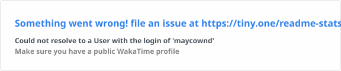

Resilience
Systems that stay online
Design with incident playbooks, guardrails, and self-healing patterns so launches don't wake people up.
I blend platform engineering discipline with product instincts to ship ML systems you can operate at 03:00, not just demo at 15:00. Currently crafting observability-first workflows at H&M.
Maycown build mode
Operating Style
Small, composable pipelines over one black box.
Quality Bar
Optimise for maintainers and on-call sleep.
Current experiments
Product-led AI assistants for internal teams.
How I work
I design systems that make data useful fast, keep stakeholders in the loop, and survive changing requirements. The mission: make ML products trustworthy, observable, and repeatable.
Resilience
Design with incident playbooks, guardrails, and self-healing patterns so launches don't wake people up.
Data to product
Turn messy retail data into decision-ready products that people actually use, not dashboards that gather dust.
Cloud-native
Build pipelines with tracing, metrics, and alerts by default, keeping feedback loops tight for everyone involved.
AI + product
Create internal assistants and workflows that remove toil, shorten loops, and keep teams focused on high-impact work.
What makes my style different
I build for the hard hours — clear naming, strong docs, and predictable pipelines so incident response is calm.
Prefer small, composable pipelines you can reason about, swap, and extend without breaking everything.
Blend platform discipline with product instincts — shipping experiences that match the user and business constraints.
Treat docs, naming, and runbooks as part of design. Teams deserve clarity, not mystery.
Cloud · Data · ML toolkit
Python, TypeScript, SQL, PyTorch, TensorFlow, Databricks, GCP, BigQuery, DBT, Docker.
Pipeline control room
Operating principles
Selected projects
Building neural networks from scratch and with Keras, plus segmentation for medical and bone images. Fashion and MNIST vision experiments round out the toolkit.
Lightweight nutrition analysis, score prediction for ENEM 2016 maths, and hackathon-ready data science content for fast validation.
Stock tracking, gym inventory management, and TypeScript playgrounds for rapid prototyping. Emphasis on measurable impact and operability.
Working in the open
Dark, auto-updating charts keep a pulse on recent coding activity and contributions.
WakaTime activity

Contribution snake

Let's talk
I love building systems that people can rely on, with clarity baked in. Reach out if you want to ship faster and sleep better.
Outside of code
JRPG and action RPG enthusiast (FFVII is permanent S-tier). Concerts, arts, and music whenever possible.
Always up for a chat about ML systems, TypeScript, or game design.